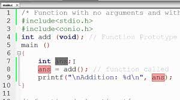
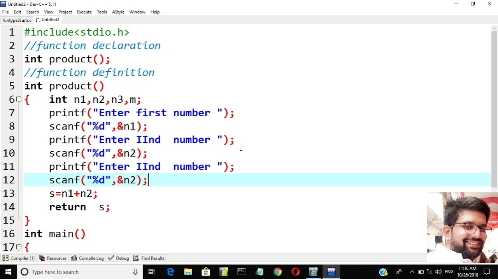
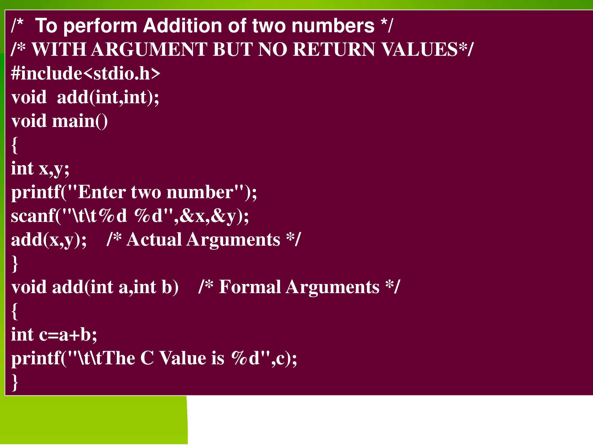
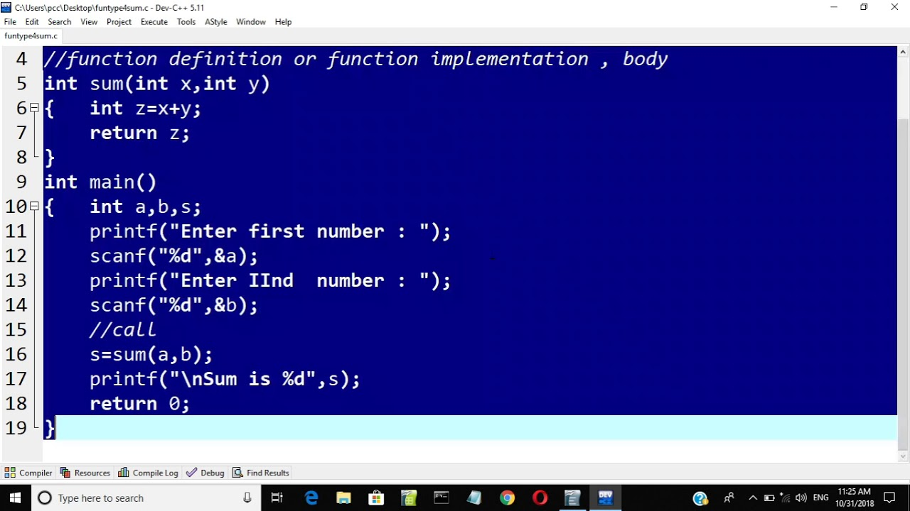

ADVANTAGES OF FUNCTIONS
The various advantages of functions include:- By using functions, we can avoid rewriting same logic/code again and again in a program.
- We can call C functions any number of times in a program and from any place in a program.
- We can track a large C program easily when it is divided into multiple functions.
- Reusability is the main achievement of C functions.
ASPECTS OF A C FUNCTION
| ASPECT | DESCRIPTION | SYNTAX |
|---|---|---|
| Function Declaration | A function must be declared globally in a c program to tell the compiler about the function name, function parameters, and return type. | return_type function_name (argument list); |
| Function Call | Function can be called from anywhere in the program. The parameter list must not differ in function calling and function declaration. We must pass the same number of functions as it is declared in the function declaration. | function_name (argument_list) |
| Function Definition | It contains the actual statements which are to be executed. It is the most important aspect to which the control comes when the function is called. | return_type function_name (argument list) {function body;} |
RETURN VALUE
A C function may or may not return a value from the function. If we don't have to return any value from the function, we use void for the return type.If you want to return any value from the function, you need to use any data type such as int, long, char, etc. The return type depends on the value to be returned from the function.
A function may or may not accept any argument. It may or may not return any value. Based on these facts, There are four different aspects of function calls.
- function without arguments and without return value
- function without arguments and with return value
- function with arguments and without return value
- function with arguments and with return value
PROGRAM EXAMPLES ON FUNCTIONS
| function without arguments and without return value |  |
| function without arguments and with return value |  |
| function with arguments and without return value |  |
| function with arguments and with return value |  |
RECURSION
Recursion is the process which comes into existence when a function calls a copy of itself to work on a smaller problem. Any function which calls itself is called recursive function, and such function calls are called recursive calls. Recursion involves several numbers of recursive calls.Generally, iterative solutions are more efficient than recursion since function call is always overhead. Any problem that can be solved recursively, can also be solved iteratively. However, some problems are best suited to be solved by the recursion, for example, tower of Hanoi, Fibonacci series, factorial finding, etc.